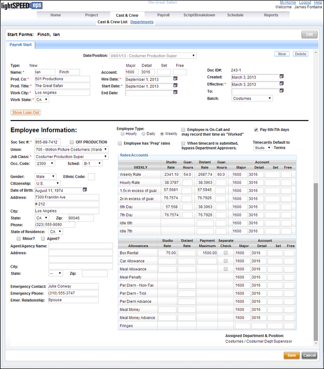
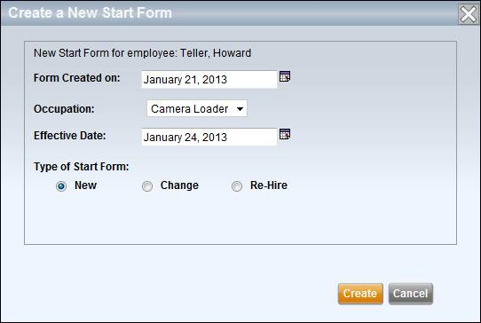
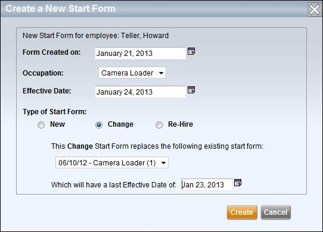
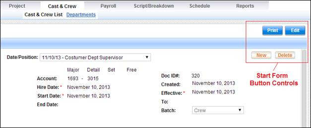

Start forms are accessible for each crew member via their Occupations mini-tab. The View Starts button displays the start forms for the selected employee. Start forms provide employment information for each crew member. The electronic timecard system requires that a crew member have a valid start form in order to create and submit a timecard.
Before a person can view and edit start forms, the Financial Data Administrator needs to grant the Edit Crew Start Forms permission to the person.
Start Form Screen

Start form fields are used to track employment agreement information for each crew member. These fields are also used when creating electronic timecards. When an electronic timecard is created in Lightspeed, it is populated with information from the start form such as occupation, rate, and account number.
Note: An employee will receive a separate weekly timecard for each active start form. Therefore, if an employee has two occupations and you create two sets of start forms for the employee, the employee will be given two separate timecards per week.
Each start form contains the following fields:
· Date & Position: A combination of the date the start form was created and the crew position. This is used to identify the start form if a crew member has multiple start forms.
· Type: The type of start form. It can either be a New, Change, or Re-Hire form.
· Name: The employee name.
·
Prod.
· Prod. Title: The title of the production.
· Work City & State: The work location.
· Account: The account number for the employee. The account number consists of a Major, Detail, Set, and one Free field.
· Hire Date: The date the employee was hired for this occupation.
· Start Date: The date the employee started work.
· End Date: The estimated or actual last date of employment for this occupation.
· Doc ID#: The document ID number for the start form. This is created by Lightspeed and can be any combination of numbers and letters up to 10 characters.
· Created: The date the form was created.
· Effective (From/To): The dates within which the start form is effective.
· Batch: The payroll batch, if applicable, into which timecards generated from this start form will be placed. For information on how to create batches, see the Batch Setup section.
· Loan-Out Corp.: The name of the employee's Loan-Out Corporation, if applicable.
· Fed ID #: The federal employer ID of the employee's corporation, if applicable.
·
State of
· State ID #: The state corporation ID number of the employee's corporation, if applicable.
· Date of Incorporation: The date on which the corporation was incorporated.
· Address: The Loan-Out Corporation's address with City, State, and Zip.
· Phone: The phone number of the Loan-Out, if applicable.
·
States in
Which Loan-Out is Qualified to do Business: If the Loan-Out is qualified to
do business in
· Social Security #: The employee's social security number. Most of this number is masked.
· OFF PRODUCTION: Whether or not the employee is considered "Off Production".
·
· Job Class: The employee's occupation name. If a union is selected, this field displays a list of union occupations. If non-union is selected, you may input any occupation name into this field.
· Occ. Code: The employee's occupation code, if applicable.
· Schedule: The union and/or employment pay schedule code, if applicable.
· Gender: The employee's gender.
· Ethnic Code: The employee's ethnic code.
· Citizen Status: The citizenship status of the employee.
· Date of Birth: The employee's date of birth.
· Address: The employee's address with City, State, and Zip.
· Phone: The employee's phone number.
·
State of
· Minor?: Whether the employee is a minor or not.
· Agent?: If the employee is represented by an agent.
· Agency Name & Address: The employee's agency name and address.
· Emergency Contact: The employee's emergency contact, phone, and relationship.
· Employee Type: Whether the employee is an hourly, daily, or weekly employee.
· Employee is On-Call/Exempt: Check this checkbox if the employee is salaried/exempt, or "on-call" and is not required to report daily work hours. These employees will receive a timecard that allows them to mark each work day as "Worked".
· Pay 6th/7th Days: Check this checkbox if the employee is eligible to receive additional or overtime payment for working a 6th or 7th day in a workweek.
· Employee has Prep Rates: Check this checkbox if the employee will be working under different rates during the Prep phase of the project. The Rate Table will expand to include Prep rates.
· Bypass Department Approvers: Check this checkbox if the employee's timecard should skip department-level timecard approvers. Such timecards, when submitted, go directly to the first production-level approver.
· Timecard Terms: Use the Timecards Default to dropdown to select whether the standard employment terms should be based on Studio or Distant terms.
· HOURLY/DAILY/WEEKLY: This column lists some of the common classifications for labor, including straight time (1.0x), time and a half (1.5x), double time (2.0x), and 6th and 7th day labor.
· Studio Rate: The rate of pay when working in a studio location.
· Guar. Hours: The number of guaranteed hours when working under studio terms.
· Distant Rate: The rate of pay when working on distant locations.
· Guar. Hours: The number of guaranteed hours when working under distant terms.
· Account: The account code for each type of labor classification. Each account number includes a Major, Detail, Set, and Free field.
· Allowance Type: This column displays a list of common allowance types such as box rental, meal allowance, and per diems.
· Studio Rate: The allowance amount when working at a studio.
· Distant Rate: The allowance amount when working on distant locations.
· Payment Maximum: A payment cap for a particular allowance. For example, if an employee is given a weekly box rental of $150 with a Payment Maximum of $750, the employee's box rental payments will end once the employee has received payments of $750.
· Separate Check: Whether a separate check should be issued for this particular type of allowance or reimbursement.
· Account: The account code for each type of labor classification. Each account number includes a Major, Detail, Set, and Free field.
Create a new start form by clicking on the New button in the upper right corner of the start form screen. A popup window appears.
Creating a New Start Form

Select the following to create the start form:
· The form's creation date
· Employee occupation
· The first effective date for the start form
· The start form type - either New, Change, or Re-Hire.
There are three types of start forms - New, Change, and Re-Hire.
· New start forms create a new blank form for the selected occupation. Complete the start form fields.
· Change start forms are intended to replace a prior start form with new information. When you create a Change start form you are prompted to select the previous start form that will be superseded by the new Change form.
Creating a Change Form

· Re-Hire start forms are similar to change forms in that they reference a previous start form.
When either Change or Re-Hire forms are created, they are populated with the information from the older existing form that the new form references.
Note: Change and Re-Hire forms are considered continuations of previous start forms, and are used to create the same set of electronic timecards as the previous forms. Therefore, only one timecard will be created, per week, from all of these connected start forms.
Each separate start form creates its own weekly timecard for the employee. Therefore, if an employee has a start form for the occupation Key Grip and another start form for the occupation Location Manager, that employee will receive two timecards per week. One timecard for Key Grip, the other for Location Manager.
However, when start forms supersede one another, as in the case of Change and Re-Hire forms, then the newer forms do not result in a separate set of timecards per week. In these cases, the start forms all refer to a single occupation and therefore only create a single timecard per week. An employee with a Key Grip start form who then receives a change form for the same Key Grip occupation will continue to receive one timecard per week, for the Key Grip occupation.
To edit a start form, click on the Edit button in the header area above the Start Form.
Start Form Button Controls

After making your changes click on the Save button in the lower right corner of the screen, below the start form.
Print a start form by clicking on the Print button in the header area above the Start Form. The start form report will appear as a .pdf document.
Delete a start form by clicking on the Delete button in the upper right corner of the start form screen.
Note: You may not delete a start form if it has electronic timecards associated with it. Once timecards have been generated from a start form, the start form may not be deleted.
Related Topics